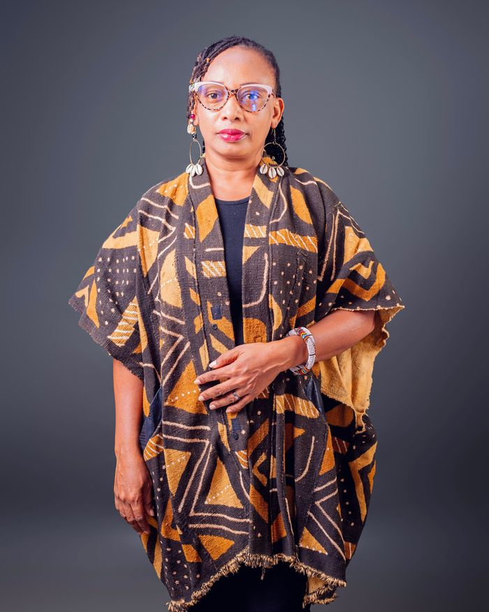
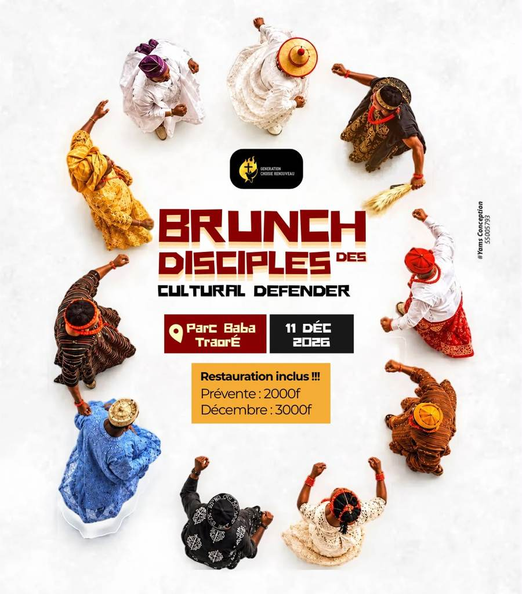
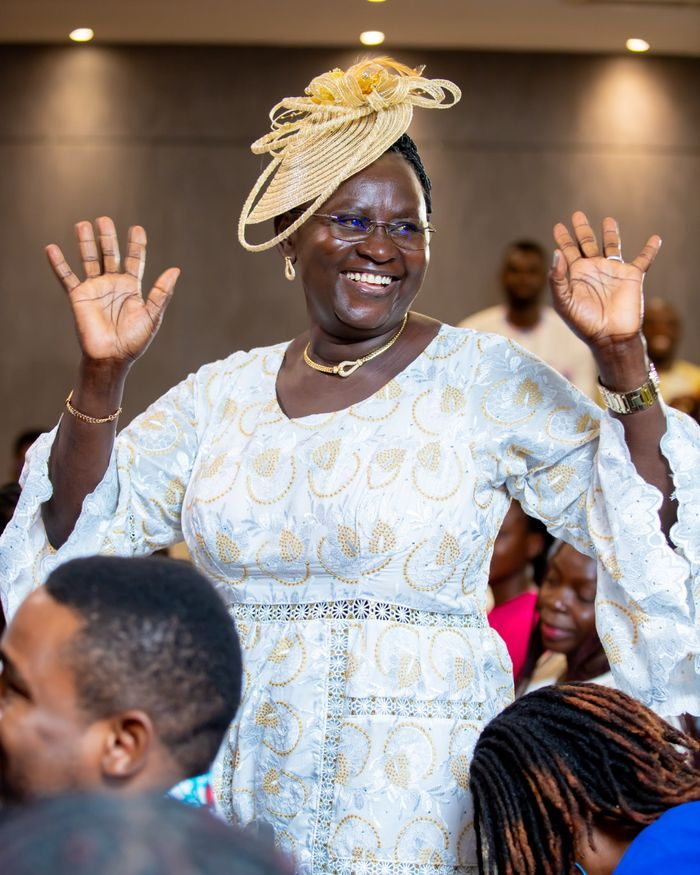
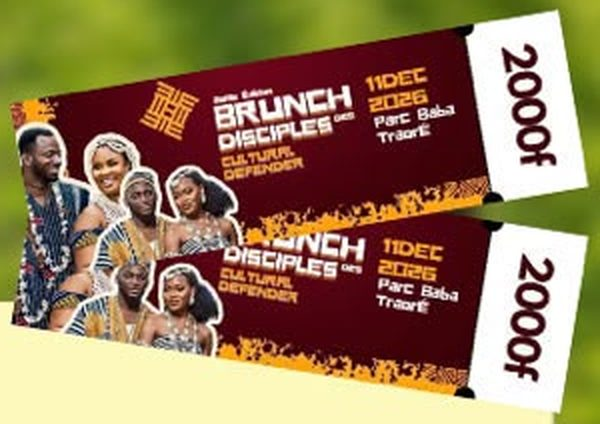
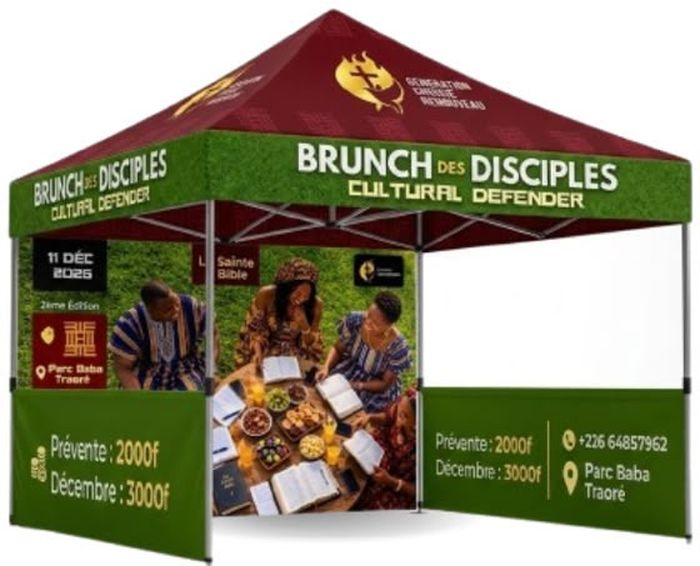

TOU Bienvenue épouse OUATTARA
Magistrate, conseillère à la Cour d’Appel de Bobo-Dioulasso. Présidente de l’association KEYOIKLAI.
Génération Choisie Renouveau
Brunch des Disciples · Cultural Defender
À la gloire de Jésus-Christ
Cultural Defender
Disciples de Jésus-Christ, défenseurs de notre culture
Après une première édition réussie, le Brunch des Disciples revient avec un thème fort : être un défenseur de sa culture, avec Jésus-Christ au centre. Une journée de foi, de partage et de convivialité, au cœur de Bobo-Dioulasso.

Au centre de tout : Jésus-Christ
« À ceci tous connaîtront que vous êtes mes disciples, si vous avez de l’amour les uns pour les autres. »Jean 13:35
Le Brunch des Disciples est un rendez-vous chrétien de Génération Choisie Renouveau. Nous nous retrouvons pour célébrer Jésus-Christ, prier, partager un repas et réfléchir ensemble, afin de vivre notre foi avec fierté dans notre culture.
Deux femmes engagées, deux grands thèmes pour réfléchir ensemble dans la foi en Jésus-Christ.

Magistrate, conseillère à la Cour d’Appel de Bobo-Dioulasso. Présidente de l’association KEYOIKLAI.

Présidente de la SCOOPS-ETM et promotrice de BENAKA. Entrepreneure et femme d’affaires chrétienne évangélique.
La restauration est incluse. Achetez en prévente pour payer moins cher.

Aucun point de vente trouvé. Appelez le +226 64 85 79 62.
Ajoutez votre nom et votre photo, téléchargez l’affiche et partagez-la avec vos proches sur WhatsApp et les réseaux.
Vous avez une activité à présenter ? Choisissez un stand : un message WhatsApp s’ouvre, prêt à envoyer.

Louange, danse, rires et partage sur l’herbe : l’ambiance du premier Brunch des Disciples.
Photos : Genesis Group